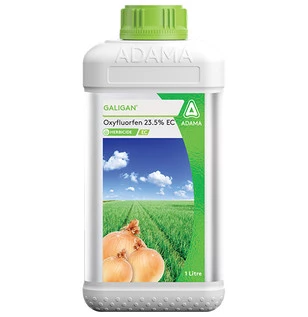

Controls a wide spectrum of annual broadleaf and grass weeds
Technical Name: Oxyfluorfen 23.5% EC
Major Crops: Non-crop areas, Ornamentals, Fruits (strawberries, citrus), Vegetables
Mode of action: Oxyfluorfen is a pre-emergence and post-emergence herbicide that inhibits the enzyme protoporphyrinogen oxidase (PPO) in plants. This enzyme is crucial for the biosynthesis of chlorophyll and other pigments. By blocking this enzyme, oxyfluorfen disrupts the photosynthesis process and causes the accumulation of toxic porphyrin intermediates. This leads to cell membrane damage and ultimately the death of the target weeds.
Target Pest: Pigweed (Amaranthus spp.), Lambsquarters (Chenopodium spp.), Chickweed (Stellaria spp.), Purslane (Portulaca oleracea), Mustard (Brassica spp.), Velvetleaf (Abutilon theophrasti)
Presentation Available: 100ml, 250ml, 500ml, 1ltr
Company: Adama